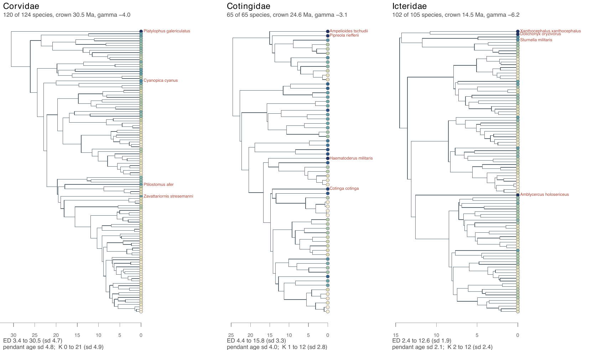

E25 — the three bird families under the whole workflow
| Status | complete (runs E25c and E25d); historical: a method-development step; not a current result (replaced by E28, which refits the three families at 300 iterations under the build that reports the parsimonious choice) |
| Package build | not recorded in the results; the restart followed the retry fix of the E23 amendment |
| Driver / analysis | sim/E25-real.R (--box study for E25c, --box auto for E25d) |
| Data | results/E25c/fits.csv, paths.csv (study box); results/E25d/fits.csv, paths.csv (auto_bounds()); results/E25/jobs/ (an earlier run, Cotingidae and Icteridae only) |
Question
E5 fitted Corvidae, Cotingidae and Icteridae with dd, ed and ned on the linear link, and E17 bootstrapped the ned-over-dd margins. The biology paper ends on these three clades and needs the workflow a user runs, on the link every lineage-level experiment uses: the one-call ladder and the covariate path.
Design
| setting | value |
|---|---|
| trees | the same three, tip edges extended to one present as in E5 |
| \(\rho\) | 0.968 (Corvidae), 1 (Cotingidae), 0.971 (Icteridae) |
| ladder | estimate_rates(model = "all"), exponential link: cr → dd → {nd, ned, nk}, each started from the model it nests |
| box | E25c: the box of sim/box.R from the observed tree (the rule of every simulation experiment); E25d: auto_bounds() |
| draws | 300 |
| iterations | max_iter 100 |
| clock | 60 min per fit |
| ranking | compare_models() (minimum AIC at this build) |
| path | covariate_path() over \(N\), \(D\), ED, \(K\) for speciation and extinction, once on the observed tree (exact) and once on 3000 surrogate draws at the ladder's dd estimate, the 150 of largest weight entering (the E20 setting) |
Recorded per family and model: AIC, log-likelihood, effective sample, gap, stop reason, proposal, iterations, coefficients; per family the winner, its margin, the ranking-at-risk flag, and both paths' entry orders and BIC and AIC sets.
Why two boxes: on Corvidae (crown 30.5 Ma) auto_bounds() for nd ran more than five hours without finishing, because its per-lineage feasibility simulations at the explosive corners of the box ran to the lineage cap, each at quadratic cost. The forward simulator also retried clades that overflowed max_lin as if extinct; the retry fix (E23 amendment) is why the run was restarted on 2026-10-01. E25c was run with the study box to get past it; E25d with auto_bounds() once the fix was in. The README's E25 row names --box study; the supplement's index points at results/E25/jobs/, which holds two families only.
Pre-set rule
None. "An illustration, read against the floors of the simulation chapters"; every coefficient is reported with the effective sample and the stop reason of the fit it comes from.
Results
Ladder, E25d (auto_bounds()), with E25c in parentheses where it differs:
| family | tips | AIC cr |
dd |
nd |
ned |
nk |
winner | margin | ESS of winner (of 300) |
|---|---|---|---|---|---|---|---|---|---|
| Corvidae | 120 | 767.4 | 757.3 | 753.0 | 739.4 | 727.4 | nk |
12.0 (11.1) | 76 (84) |
| Cotingidae | 65 | 412.0 | 405.5 | 409.2 | 409.5 | 407.5 | dd |
2.0 (2.2) | 299 |
| Icteridae | 102 | 535.1 | 508.3 | 516.7 | 503.4 | 510.0 | ned |
4.9 (5.1) | 109 (23) |
Coefficients (E25d): Corvidae nk \(\beta_K = +0.148\) per split, ned \(\beta_{ED} = -0.157\) per ED unit; Icteridae ned \(\beta_{ED} = -0.236\); Cotingidae nk \(\beta_K = +0.077\). Stop reasons: Corvidae nk converged at 12 iterations (E25c: 85), ned at 33; Icteridae ned converged at 67 (E25c: on max_iter, ESS 23); every nd fit on max_iter, with ESS 71 (Corvidae), 101 (Cotingidae) and 6.5 (Icteridae, sampler-limited). The ranking-at-risk flag is false on all three. Ladder wall-clock: 4043, 1595 and 2621 s (Corvidae, Cotingidae, Icteridae) with auto_bounds(); 1787, 747 and 1994 s with the study box.
Path (identical sets in E25c and E25d):
| family | speciation, observed tree: entry order | BIC set | BIC set on 3000 draws (ESS of the draw set) | extinction BIC set: observed / draws |
|---|---|---|---|---|
| Corvidae | D > ED > N > K | D+ED | D+ED (2959) | empty / empty |
| Cotingidae | N > ED > D > K | N | N (2992) | empty / empty |
| Icteridae | N > ED > D > K | N+ED | N+ED (2867) | empty / N |
The observed tree holds no extinction events, so the observed-tree extinction path is empty by construction.

Conclusion
No rule. On the exponential-link ladder the three families return three different answers: nk on Corvidae by 12.0 AIC over ned, ned on Icteridae by 4.9, and dd on Cotingidae by 2.0 over nk. Corvidae, the clade E5 read as "a clean case for ED", is taken by the ancestral-splits model, while its path keeps D and ED, not K: the ladder and the path name different covariates on the same tree, the pattern E26 then finds across families and E21 predicts (K enters the path through ED with the sign reversed). The two boxes change no winner; they change Icteridae's ned fit from capped at ESS 23 to converged at ESS 109. Corvidae's dd rung ended on max_iter and Icteridae's nd is sampler-limited. The numbers the papers use for these families are E28's, refitted at 300 iterations under the build that reports the parsimonious choice.
Related
- E5 — the linear-link fits of the same trees.
- E17 — the bootstrap of E5's margins.
- E20, E21 — the covariate path and the K covariate.
- E23 — the ladder as a whole; its amendment holds the retry fix.
- E26 — the same workflow on all 47 families.
- E28 — the analysis of record for these three and 26 other families.